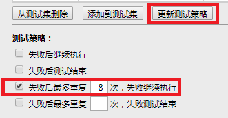
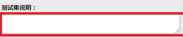
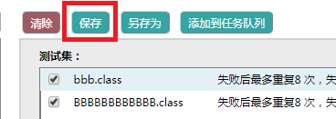
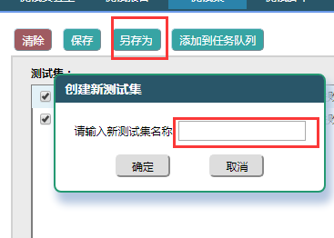
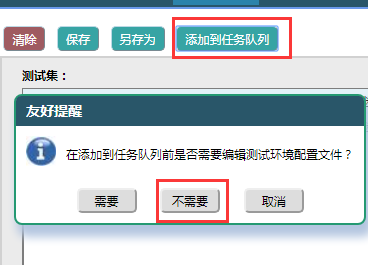

|
4. 测试策略可以在添加脚本时设置，也可以后更改。同第3步选择脚本，从新选择测试策略，点击'更新测试策略'即可。

|
5. 填写测试集说明，点击'保存'保存当前测试集（一定要保存，否则测试集不会自动保存！）


|
6. 如果要修改测试集名称，点击'另存为'从新输入名称，再保存即可。

|
7. 测试集保存后，点击'添加到任务队列'即可把测试集添加为任务，可以用到测试实验室看到。

|
说明：如果需要查看或者编辑已有测试集，或者以已有测试集为基础从新创建新的测试集，请先从测试集列表中选择要操作的测试集，右侧页面会加载该测试集的所有信息，包括脚本，之后按照上面的步骤操作即可。